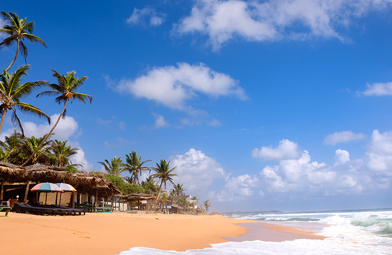
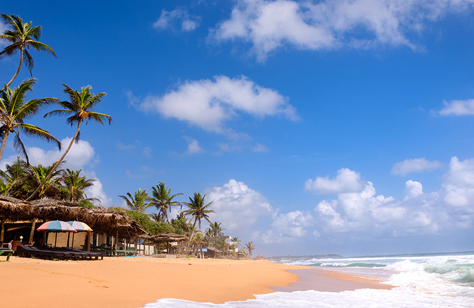

Hikkaduwa is a small town on the south coast of Sri Lanka located in the Southern Province, about 17 km (11 mi) north-west of Galle and 98 km (61 mi) south of Colombo. The name Hikkaduwa is thought to have been derived from the two words Sip Kaduwa, with Sip being the shorter version of Shilpaya which refers to knowledge in Sinhalese and Kaduwa which means sword. It is believed therefore that the name Hikkaduwa means sword of knowledge. Alternatively it means coral or seashell jungle. Hikkaduwa's economy was traditionally based on fishing and coconut cultivation. This was replaced by tourism when its golden sandy beaches were discovered. It is a well-known international destination for board-surfing. The town was featured in an episode of Anthony Bourdain's television show No Reservations.[citation needed] Hikkaduwa was affected by the tsunami caused by the 2004 Indian Ocean earthquake along with nearby villages Telwatta, Paraliya (site of the Queen of the Sea rail disaster), Dodanduwa, Kahawa and Rathgama. In the aftermath of the tsunami, many of the families who had lost everything were given sewing machines as part of the relief operations. As a result, the town has a multitude of tailors who will custom make shirts, trousers, and shorts.
 
